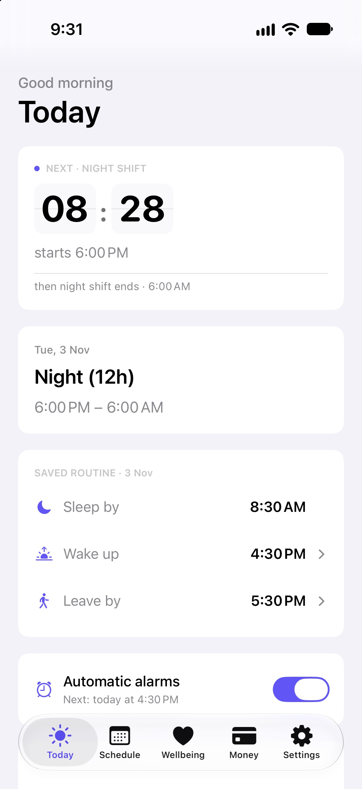

Getting started
The first time you open WorkLife, a short setup asks a few questions and then hands you a Today page with your next shift and the daily times you saved. This page walks through exactly what it asks. Nothing here is final — you can change any of it later.
1 · Welcome
The first screen is “A calm planner for any schedule.” It lists the three things WorkLife does — your rota on a calendar, independently saved wake-up alarms, and money that understands shift work — with no WorkLife account. Data is stored on your phone; iCloud backup is optional.
Tap Get started. (Already used WorkLife on another phone? Tap Restore previous data instead, and bring your backup in — you won't have to answer any of this again.)
2 · What's your rhythm?
This is the one real choice in setup. Pick the row that matches how you work:
- Just my next shift — start with a single shift and decide the rest later. This is the quickest way in.
- A ready-made rotation such as 6/6 — 3D 3N 6 off, 4 on, 4 off, 2-2-3 or General shift — tap one and WorkLife builds the whole pattern for you.
- Build your pattern — make any cycle, day by day. See the Pattern guide for this.
- I don't have a fixed pattern — add shifts as they come, with no repeating rota.
You can change this any time in Schedule, so pick the closest fit and move on.
3 · When's your next shift?
If you chose Just my next shift, this step asks for it. Tap the kind of shift — Day, Night, and so on — then check the Date, Starts and Ends times underneath. They fill in with sensible defaults for the shift you picked; adjust any that are wrong. Tap Continue.
If you picked a ready-made rotation instead, WorkLife takes you straight into that pattern and asks where today falls in the cycle — the one step people get wrong, explained in the Pattern guide.
4 · Your day
The last step is “Your day”. Tap Set wake, leave & sleep times to choose your times. Each time is saved separately: changing a shift, sleep time or sleep-duration goal does not move an alarm. You can edit these later in Settings → Wake, leave & sleep, under Your day.
Your calendar, one saved pattern and your own alarms are free. Money, Wellbeing and automatic shift alarms require WorkLife Pro. Installing the app does not start a trial. To subscribe, open Settings → Plan → Upgrade; Apple shows the available price and any eligible one-month free trial before you confirm. Tap Finish to complete setup.
That's it — you land on Today
Setup closes and you're on the Today tab. It already shows:
- a countdown to the next event in your shift day;
- today's shift and its hours;
- Sleep by, Wake up and Leave by for the day;
- controls for Automatic alarms (Pro). Review saved alarm times and repeats in Settings → Automatic alarms. Editing or removing a work pattern does not move or cancel saved alarms; edit or disable them separately.
Along the bottom are the five tabs you'll use from here: Today, Schedule, Wellbeing, Money and Settings.

Next
- How to set up your shift pattern — the full pattern builder.
- Support and contact